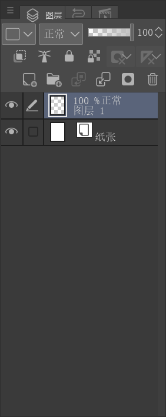
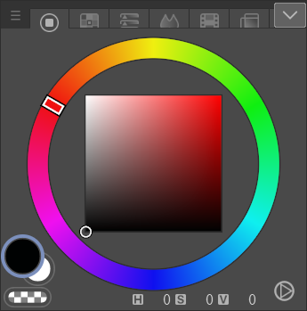

Memoline 录制核对报告
20261005_124036_1c07211005d34761b720120902a88d5f.memoline
录制：2026-10-05T20:40:36.154+08:00 → 2026-10-05T20:48:12.044+08:00 · 455.889 秒 · Gaomon M6 / OpenTabletDriver.HID
聚集事件包5
实际脏矩阵0
笔接触段36
无 Space 接触段21
带 Space 接触段15
尾部未封包笔段2
5 个聚集包全部为空，没有 diff 图像可展示。
每个包原文均为：图层「图层1」与保存文件匹配 0 个图层（核心 ID=3），无法唯一对应。
逐笔笔刷关联来自下方原生机械记录的时间轴重建；原聚集包没有存入状态指针或矩阵标签。
按下笔位置重新判定
依据文件内 workspaceStatus（appendId=5）的历史屏幕面板范围；每段用 penBegin 的 Windows 屏幕坐标判定。36 段全部属于画布视口，其中 15 段带 Space。其他面板没有记录到下笔；这不等于录制期间没有通过键盘等方式改变笔刷。
聚集包总表
边界采用 Recognizer 的 triggerTicks；各包包含 (fromTicks, toTicks] 的事件。所有 7,134 个包内事件指针均已与原生记录核对。画布尺寸初始记录为 4961 × 7016，300 dpi。
聚集包 1 · 2 段无 Space，1 段带 Space
viewport-00000000003412521520
脏矩阵：[]；图像资产：[]；状态指针：未存入（未包含该字段）。失败原文：图层「图层1」与保存文件匹配 0 个图层（核心 ID=3），无法唯一对应
封包视口：屏幕画布原点 (1161.9999999999998, -35.36166738051407)，缩放 14.8% ，旋转 0°。
控制接口已派发保存输入：20:46:17.817（比 triggerTicks 晚 411.0 ms）；error=null。原记录 saveCompletionConfirmed=false、cspAcceptanceConfirmed=false。保存控制结果 appendId=1174。
聚集包 2 · 6 段无 Space，3 段带 Space
viewport-00000000004003308287
脏矩阵：[]；图像资产：[]；状态指针：未存入（未包含该字段）。失败原文：图层「图层1」与保存文件匹配 0 个图层（核心 ID=3），无法唯一对应
封包视口：屏幕画布原点 (490, 383.00000000000006)，缩放 25% ，旋转 0°。
控制接口已派发保存输入：20:47:18.059（比 triggerTicks 晚 1574.1 ms）；error=null。原记录 saveCompletionConfirmed=false、cspAcceptanceConfirmed=false。保存控制结果 appendId=5019。
聚集包 3 · 4 段无 Space，5 段带 Space
viewport-00000000004142518261
脏矩阵：[]；图像资产：[]；状态指针：未存入（未包含该字段）。失败原文：图层「图层1」与保存文件匹配 0 个图层（核心 ID=3），无法唯一对应
封包视口：屏幕画布原点 (1186, -324)，缩放 25% ，旋转 0°。
控制接口已派发保存输入：20:47:32.580（比 triggerTicks 晚 2173.4 ms）；error=null。原记录 saveCompletionConfirmed=false、cspAcceptanceConfirmed=false。保存控制结果 appendId=6428。
聚集包 4 · 2 段无 Space，3 段带 Space
viewport-00000000004265679024
脏矩阵：[]；图像资产：[]；状态指针：未存入（未包含该字段）。失败原文：图层「图层1」与保存文件匹配 0 个图层（核心 ID=3），无法唯一对应
封包视口：屏幕画布原点 (542, -127.90963792389802)，缩放 25% ，旋转 0°。
控制接口已派发保存输入：20:47:44.619（比 triggerTicks 晚 1897.1 ms）；error=null。原记录 saveCompletionConfirmed=false、cspAcceptanceConfirmed=false。保存控制结果 appendId=7523。
聚集包 5 · 5 段无 Space，3 段带 Space
viewport-00000000004417728366
脏矩阵：[]；图像资产：[]；状态指针：未存入（未包含该字段）。失败原文：图层「图层1」与保存文件匹配 0 个图层（核心 ID=3），无法唯一对应
封包视口：屏幕画布原点 (602, 225)，缩放 25% ，旋转 0°。
控制接口已派发保存输入：20:47:59.574（比 triggerTicks 晚 1646.6 ms）；error=null。原记录 saveCompletionConfirmed=false、cspAcceptanceConfirmed=false。保存控制结果 appendId=10593。
最后封包之后：2 段笔接触尚未进入聚集包
尾部有 1297 个机械事件（2 个键盘事件、1,295 个笔事件）。发生在最后边界之后，文件封盘没有产生第 6 个聚集包。
12 条确认过的笔刷状态 · 全部原始属性
名称与数值保留识别原文；highlight_index 显示选项序号，不转换成百分比。属性 unit=null 时不擅自补单位。每笔沿用其起笔之前最近一次确认状态；颜色仅记录过 #000202，图层接口仅确认过「图层1」。
B01 · G筆 · 用于笔段 1, 2, 3, 4 · appendId=884
trigger=20:46:09.601（333.4464149 s）；截图=2026-10-05T20:46:09.661+08:00；写入=2026-10-05T20:46:15.123+08:00；识别状态=ok。
机械记录原图，点击放大；不是 diff 或脏矩阵图像。
B02 · G筆 · 用于笔段 5 · appendId=1636
trigger=20:46:33.535（357.3802265 s）；截图=2026-10-05T20:46:33.749+08:00；写入=2026-10-05T20:46:34.346+08:00；识别状态=ok。
机械记录原图，点击放大；不是 diff 或脏矩阵图像。
B03 · G筆 · 用于笔段 6 · appendId=1983
trigger=20:46:36.214（360.0592181 s）；截图=2026-10-05T20:46:36.434+08:00；写入=2026-10-05T20:46:37.030+08:00；识别状态=ok。
 机械记录原图，点击放大；不是 diff 或脏矩阵图像。
机械记录原图，点击放大；不是 diff 或脏矩阵图像。
B04 · 自動鉛筆 · 用于笔段 7, 8 · appendId=2301
trigger=20:46:43.864（367.7092041 s）；截图=2026-10-05T20:46:44.082+08:00；写入=2026-10-05T20:46:44.602+08:00；识别状态=ok。
B05 · 較硬 · 用于笔段 9, 10, 11, 12 · appendId=2772
trigger=20:46:50.154（373.9992983 s）；截图=2026-10-05T20:46:50.361+08:00；写入=2026-10-05T20:46:50.951+08:00；识别状态=partial。
B05 原始截图的硬度行有多个格子高亮，结构化接口值却为选项 1；保留原值供核对，不把它解释成硬度百分比。
未结构化的可见文本：√矢量擦除。不将这些文本当作已确认属性值。
B06 · G筆 · 用于笔段 13, 14, 15 · appendId=5033
trigger=20:47:17.987（401.8324141 s）；截图=2026-10-05T20:47:18.192+08:00；写入=2026-10-05T20:47:18.815+08:00；识别状态=ok。
机械记录原图，点击放大；不是 diff 或脏矩阵图像。
B07 · G筆 · 用于笔段 16, 17, 18, 19, 20, 21 · appendId=5447
trigger=20:47:24.858（408.7041233 s）；截图=2026-10-05T20:47:25.083+08:00；写入=2026-10-05T20:47:25.606+08:00；识别状态=ok。
B08 · 自動鉛筆 · 用于笔段 无 · appendId=6436
trigger=20:47:31.482（415.3272432 s）；截图=2026-10-05T20:47:32.016+08:00；写入=2026-10-05T20:47:32.936+08:00；识别状态=ok。
 机械记录原图，点击放大；不是 diff 或脏矩阵图像。
机械记录原图，点击放大；不是 diff 或脏矩阵图像。
B09 · 自動鉛筆 · 用于笔段 22, 23, 24, 25, 26 · appendId=6504
trigger=20:47:35.532（419.3771316 s）；截图=2026-10-05T20:47:35.737+08:00；写入=2026-10-05T20:47:36.164+08:00；识别状态=ok。
 机械记录原图，点击放大；不是 diff 或脏矩阵图像。
机械记录原图，点击放大；不是 diff 或脏矩阵图像。
B10 · G筆 · 用于笔段 27, 28, 29, 30, 31, 32, 33, 34, 35 · appendId=7590
trigger=20:47:44.655（428.5003901 s）；截图=2026-10-05T20:47:44.884+08:00；写入=2026-10-05T20:47:45.494+08:00；识别状态=ok。
 机械记录原图，点击放大；不是 diff 或脏矩阵图像。
机械记录原图，点击放大；不是 diff 或脏矩阵图像。
B11 · 自動鉛筆 · 用于笔段 无 · appendId=10618
trigger=20:48:00.053（443.8990396 s）；截图=2026-10-05T20:48:00.283+08:00；写入=2026-10-05T20:48:00.799+08:00；识别状态=ok。
B12 · 較硬 · 用于笔段 36 · appendId=10645
trigger=20:48:01.483（445.3281886 s）；截图=2026-10-05T20:48:01.701+08:00；写入=2026-10-05T20:48:02.288+08:00；识别状态=partial。
未结构化的可见文本：√矢量擦除。不将这些文本当作已确认属性值。
 机械记录原图，点击放大；不是 diff 或脏矩阵图像。
机械记录原图，点击放大；不是 diff 或脏矩阵图像。
证据范围与图层匹配问题
原生机械记录：12,052 条追加记录、8,431 个输入事件，包含 36 次 penBegin、8,328 个 penSample、36 次 penEnd、31 个 keyInput；另有 450 个 screenshotBlob 记录、21 条确认核心状态。聚集性维度有 6 个采样：1 个视口基线 0、5 个变化 1；其余 5 个连续性字段全部为 null。
初始文件解析确认「图层 1」ID=3、UUID=0dd394f6cd-0249-cda8-469e-51a828baaa。当前图层接口的 OCR 名称是「图层1」。代码已经忽略名称空格；记录能证明的是文件图层身份匹配失败，不能仅由名称差异推断原因。
补充检查（2026-10-05T20:59:14.157704+08:00，检查的是当前磁盘 CLIP，不属于历史 memoline 内容）：同名「图层 1」的 ID=19，UUID=c7609660dc-c345-85bb-c485-8da028fa6f，与初始核心不同。历史保存快照不在封盘文件内，无法仅凭这份文件确认身份在哪一次操作改变。
初始图层与颜色面板原始证据
currentLayerState · appendId=902

colorState · appendId=840

完整性：封盘哈希校验通过，原生 reader 完成逐帧 CRC 与 footer 检查；聚集包指针逐一核对通过；14 张导出的原始证据图像 SHA-256 与原记录一致。原 memoline 未被修改。
全部原生机械记录 JSONL（约 100 MB，含原始截图 base64） · 原聚集包 JSONL · 封盘校验结果 · 当前 CLIP 补充检查